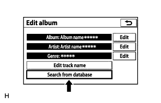

АУДИОВИЗУАЛЬНАЯ СИСТЕМА (для моделей с системой навигации) > Отображается неточная информация о мелодиях |
| 1.ПОВТОРИТЕ ПОИСК В МУЛЬТИМЕДИЙНОЙ БАЗЕ ДАННЫХ |
На экране "Edit album" (редактирование альбома) выберите "Search from database" (поиск в базе данных).
|  |
Повторите поиск в мультимедийной базе данных.
| ДАЛЕЕ | ||
| ||